Portfolio Zakaria Bellazaar
Bonjour, je me présente
Zakaria Bellazaar
Technicien Helpdesk chez Veolia
Je suis actuellement en alternance chez Helpline, en poste chez Veolia à Aubervilliers. J’interviens en tant que technicien support informatique pour assurer le bon fonctionnement des postes utilisateurs, gérer les incidents et assister les utilisateurs à distance ou sur site.
Pour en savoir plus, retrouvez-moi sur LinkedIn.
Bonne visite !
VEOLIA
Veolia est un groupe international expert dans la gestion optimisée des ressources. L’entreprise intervient dans trois domaines principaux :
Eau
Traitement et distribution d’eau potable, assainissement et dépollution.
Déchets
Collecte, tri, recyclage et valorisation des déchets ménagers et industriels.
Énergie
Gestion énergétique des bâtiments, réseaux de chaleur et énergies renouvelables.
En tant qu’alternant chez Helpline, j’interviens sur le site de Veolia à Aubervilliers. Mon rôle est d’assurer le support informatique des utilisateurs, la gestion du parc et la résolution des incidents techniques.
Compétences
Au fil de mes expériences professionnelles et scolaires, j’ai développé des compétences variées. Ci-dessous, vous trouverez un aperçu des domaines techniques dans lesquels je suis à l’aise, illustrés par quelques exemples de mes savoir-faire.
Réseaux
- Routeurs & Commutateurs
- VPN & LAN/WAN
- Gestion du trafic
Virtualisation
- Proxmox, VMware
- VM & Snapshots
- Infrastructure Cloud
Sécurité
- Durcissement Systèmes
- Contrôle d'accès
- Veille Sécurité
Dév. Web
- HTML, CSS
- Notions JS
- Front-End Intégration
PARCOURS
2023 - 2025
IMCP - Institut du Marais-Charlemagne-Pollès | ParisBTS : informatique SIO spécialité SISR – en cours
09/2022 - 07/2023
Université Sorbonne Paris Nord | VilletaneuseLicence : Licence Informatique L1 – Étudiant 1ère année licence informatique semestre
09/2020 - 07/2021
Lycée Jean Calvin | NoyonBaccalauréat : Bac Générale Spécialité Maths, Physique Chimie Option Maths expertes – Mention assez bien
09/2016 - 07/2018
Collège Louis Pasteur | NoyonBrevet des collèges – Mention bien
CV
Télécharger mon CV (PDF)BTS SIO – Services Informatiques aux Organisations
Le BTS SIO est une formation en deux ans qui forme des techniciens capables de répondre aux besoins informatiques des entreprises. Elle propose deux spécialisations : SISR pour l'infrastructure réseau et SLAM pour le développement d'applications.
Option SISR
L’option SISR (Solutions d’Infrastructure, Systèmes et Réseaux) prépare aux métiers liés à l’installation, la maintenance, la sécurisation et l’optimisation des infrastructures réseaux et serveurs.
- Gestion de serveurs (Linux, Windows)
- Réseaux, virtualisation, VPN
- Sécurité informatique
Option SLAM
L’option SLAM (Solutions Logicielles et Applications Métiers) est orientée développement. Elle forme des développeurs capables de concevoir des applications web, mobiles ou logiciels métiers.
- Développement Web & Logiciel
- Base de données & API
- Langages (PHP, Java, Python...)
Tableau de synthèse
Projets Entreprise


Projets Scolaires


Veilles Techno
Dans le cadre de ma formation et de ma curiosité personnelle, j’effectue une veille régulière sur les nouvelles technologies. Voici deux exemples de veilles que j’ai réalisées :